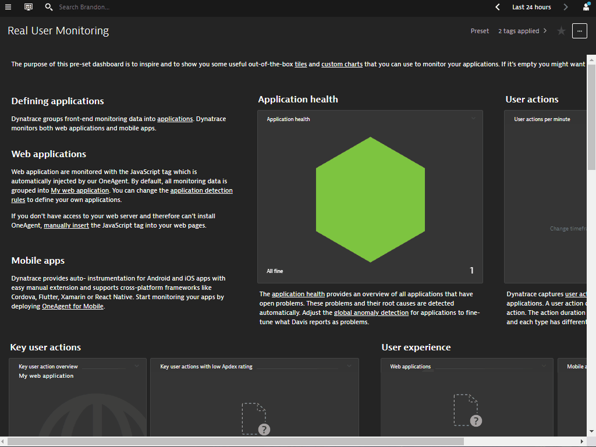

This repository contains the hands on session for Log Monitoring 2.0
Prerequisites
- Dynatrace SaaS/Managed Account. Get your free SaaS trial here.
- AWS account, with the ability to create an EC2 instance from a public AMI. Signup to a free trial here.
- Chrome Browser
- SSH client such as mobaxterm.
Lab Setup
The following steps are used for this lab:
- Sample Application
- Sample App is based on Sockshop
What You'll Learn
- Deploy OneAgent to a Kubernetes / Microservice Environment
- How to use the new Log Viewer
- Ingest Logs via FluentD
- Cloud Forwarder ingestion with AWS Log Forwarder
- Using Log Metrics
In this exercise, we will deploy the OneAgent to a Linux instance running Kubernetes(Microk8s) and let the OneAgent discover what is running in that instance.
Using Terminal via Web Browser
To faciliate the labs, we will access the Linux instance via terminal through a web browser.
Use the URL was provided in your email to access the SSH terminal. Make sure the URL looks like Public IP Address/wetty
Use the login name and password as provided in your email.

Download the OneAgent
Open your browser and access the Dynatrace URL.
Follow these steps below:
- Select Dynatrace Hub from the navigation menu.
- Select Kubernetes
- Select Monitor Kubernetes button from the bottom right.

Within the Monitor Kubernetes / Openshift page, follow these steps below:
- Enter a Name for the connection Eg.
k8s - Click on Create tokens to create PaaS and API tokens with appropriate permissions
- Toggle ON Skip SSL Certificate Check
- Click Copy button to copy the commands.
- Paste the command into your terminal window and execute it.

Example:
Connecting to github-releases.githubusercontent.com (github-releases.githubusercontent.com)|185.199.108.154|:443... connected.
HTTP request sent, awaiting response... 200 OK
Length: 7310 (7.1K) [application/octet-stream]
Saving to: ‘install.sh'
install.sh 100%[=====================================================>] 7.14K --.-KB/s in 0s
2021-06-01 05:46:36 (40.7 MB/s) - ‘install.sh' saved [7310/7310]
Check for token scopes...
Check if cluster already exists...
Creating Dynatrace namespace...
Applying Dynatrace Operator...
Warning: apiextensions.k8s.io/v1beta1 CustomResourceDefinition is deprecated in v1.16+, unavailable in v1.22+; use apiextensions.k8s.io/v1 CustomResourceDefinition
customresourcedefinition.apiextensions.k8s.io/dynakubes.dynatrace.com created
serviceaccount/dynatrace-dynakube-oneagent created
serviceaccount/dynatrace-dynakube-oneagent-unprivileged created
serviceaccount/dynatrace-kubernetes-monitoring created
serviceaccount/dynatrace-operator created
serviceaccount/dynatrace-routing created
podsecuritypolicy.policy/dynatrace-dynakube-oneagent created
podsecuritypolicy.policy/dynatrace-dynakube-oneagent-unprivileged created
podsecuritypolicy.policy/dynatrace-kubernetes-monitoring created
podsecuritypolicy.policy/dynatrace-operator created
podsecuritypolicy.policy/dynatrace-routing created
role.rbac.authorization.k8s.io/dynatrace-dynakube-oneagent created
role.rbac.authorization.k8s.io/dynatrace-dynakube-oneagent-unprivileged created
role.rbac.authorization.k8s.io/dynatrace-kubernetes-monitoring created
role.rbac.authorization.k8s.io/dynatrace-operator created
role.rbac.authorization.k8s.io/dynatrace-routing created
clusterrole.rbac.authorization.k8s.io/dynatrace-kubernetes-monitoring created
clusterrole.rbac.authorization.k8s.io/dynatrace-operator created
rolebinding.rbac.authorization.k8s.io/dynatrace-dynakube-oneagent created
rolebinding.rbac.authorization.k8s.io/dynatrace-dynakube-oneagent-unprivileged created
rolebinding.rbac.authorization.k8s.io/dynatrace-kubernetes-monitoring created
rolebinding.rbac.authorization.k8s.io/dynatrace-operator created
rolebinding.rbac.authorization.k8s.io/dynatrace-routing created
clusterrolebinding.rbac.authorization.k8s.io/dynatrace-kubernetes-monitoring created
clusterrolebinding.rbac.authorization.k8s.io/dynatrace-operator created
deployment.apps/dynatrace-operator created
W0601 05:46:39.025776 29593 helpers.go:553] --dry-run is deprecated and can be replaced with --dry-run=client.
secret/dynakube configured
Applying DynaKube CustomResource...
dynakube.dynatrace.com/dynakube created
Adding cluster to Dynatrace...
Kubernetes monitoring successfully setup.
$
Validate the installation in Deployment status
Click on Show deployment status to check the status of the connected host.
You should be able to see a connected host as per the image below.

Restart Sockshop application
To restart the sample app Sockshop execute the following command:
kubectl delete po --all -n dev
kubectl delete po --all -n production
Explore the Sockshop Application
Within Dynatrace, follow the steps below to get Sockshop URL:
- Click on the hostname in the OneAgent deployment screen.
- Expand Properties and tag in Host view
- Select and Copy Public Host name from the metadata
- Amend the Public Host name to match the following format:
- Sockshop Production
http://production.front-end.PUBLIC-IP.nip.io/ - Sockshop Dev
http://dev.front-end.PUBLIC-IP.nip.io
- Sockshop Production
Installing Traditional Docker app
To install the traditional docker app, execute the commands below:
git clone https://github.com/Nodnarboen/k8s-wordsmith-demo
sudo apt install docker-compose
docker-compose up
Explore the New Log Viewer
Notice how Docker Logs are automatically generated for Log Mon 2.0
You can use the facets or top filter bar to look for log_analytics_special_file_header to identify the automatic detected Docker Logs.
The log events are fed in with context to the entities that they are related to them.
Dynatrace's new Log monitoring allows easy to use generic log ingestion. Using plugins such as FluentD, we can easily ingest log streams into Dynatrace.
We will be using the FluentD plugin found here
Setting up Activegate
With generic ingestion, you'll need to rely on an Activgate. Follow the documentation instructions here
Because we are installing Activegate on an AWS instance, we'll need to change it to use a public facing domain name.
- Go to
/var/lib/dynatrace/gateway/config/ - Edit
custom.properties - Use the following:
[connectivity]
dnsEntryPoint = https://PUBLIC_DOMAIN_NAME:9999
- You can find the Public domain name as a metadata within Host View
- Save and start Activegate with
systemctl restart dynatracegateway
Setting up FluentD
We will easy FluentD with following their official instructions
Run the following command:
curl -L https://toolbelt.treasuredata.com/sh/install-ubuntu-bionic-td-agent3.sh | sh
Next refering to the Dynatrace's Opensource Repo, we can install the plugin with
td-agent-gem install fluent-plugin-dynatrace
Ingesting logs via commandline
With the plugin and you simplify integrations to Dynatrace. But you might still need to transform logs into a format readable by Dynatrace. We will use our documentation page to apply necessary transformation.
Edit the config file with this command
nano /etc/td-agent/td-agent.conf
Use the code below to output of system.loadavg to Dynatrace. We will also run that at an interval of 1m while adding adding additional parameters such as dt.process.commandline and status
<source>
@type exec
tag system.loadavg
command printf 'd system.loadavg ' | cat - /proc/loadavg | cut -d ' ' -f 1,2,3,4,5
run_interval 1m
<parse>
@type tsv
keys status,dt.process.commandline,avg1,avg5,avg15
delimiter " "
</parse>
</source>
<match **>
@type dynatrace
active_gate_url https://<PUBLIC_DOMAIN_NAME>:9999/e/<TENANT_ID>/api/v2/logs/ingest
api_token <TOKEN_NAME>
ssl_verify_none true
<buffer>
flush_thread_count 1
chunk_limit_size 1048576
</buffer>
</match>
Within the Log Viewer, you can also toggle on Advanced query and use this query status="info" AND loglevel="DEBUG" to filter down the songs

Next, we will try to ingest logs from Cloud vendors such as AWS. We will use the AWS Log Forwarder from here

Deploying the Infrastructure
We will need to setup the AWS Infrastructure setup via running a Cloudformation script.
Follow the steps to do that
- Login to the AWS Portal

- Choose the right role with the appropriate permissions and also the right region
- Click on the AWS CloudShell icon on top right area, next to the alarm icon
- Amend the Placeholder values such as PUBLIC_DOMAIN_NAME and TENANT_ID and TOKEN_NAME in the script below
TARGET_URL=https://<PUBLIC_DOMAIN_NAME>:9999/e/<TENANT_ID>
TARGET_API_TOKEN=<TOKEN_NAME>
REQUIRE_VALID_CERTIFICATE=false
- Copy and paste the command in AWS CloudShell
- Run this script to download the script from the repo and to deploy the infrastructure:
wget -O dynatrace-aws-log-forwarder.zip https://github.com/dynatrace-oss/dynatrace-aws-log-forwarder/releases/latest/download/dynatrace-aws-log-forwarder.zip && unzip -qo dynatrace-aws-log-forwarder.zip && ./dynatrace-aws-logs.sh deploy --target-url $TARGET_URL --target-api-token $TARGET_API_TOKEN --require-valid-certificate $REQUIRE_VALID_CERTIFICATE

Creating Demo Lamda Function
For the purpose of sending Cloudwatch, we will create a new Lambda function.
- Duplicate the tab and search for Lambda within the AWS Search Bar and go to Lambda
- Click on Create Function
- Use default option of Author from scratch
- Give a Function name
Demo - Click on Create Function
- We can also instrument this function with Dynatrace as a Lambda extension
- Using Configure with JSON file, configure the function wtih Dynatrace instrumentation
- Add environment variable to the function
- Add
dtconfig.jsonwith code snippet to the root folder - Add Lambda layer ARN
- Once configured, click on Deploy* and Test
Subscribing to the Cloudwatch Logs
- Back within the AWS Cloudshell, run the following command:
./dynatrace-aws-logs.sh discover-log-groups > LOG_GROUPS_FILE - You see the discovered log groups with
more LOG_GROUPS_FILE - To subscribe, use the command below:
./dynatrace-aws-logs.sh subscribe --log-groups-from-file LOG_GROUPS_FILE
View Cloudwatch logs in Dynatrace
Back in Dynatrace, go to the new Log Viewer to see the new Log events from Cloudwatch logs

Create a log metric based on the Cloudwatch metrics
- Filter on your aws.account.id
- Apply a filter for content with
REPORT RequestId: - This would reduce your search to only log events with RequestId
- Click on create metric
- Give a key
log.lambda - Click on Add dimension with the following:
- aws.region
- aws.resource.id
- aws.log_stream​
- Click on Metrics on the left navigation panel
- Search for
Text:Logto locate the log metric - Click on create chart
- You can spilt Log metrics with various dimensions attached to it
We hope you enjoyed this lab and found it useful. We would love your feedback!